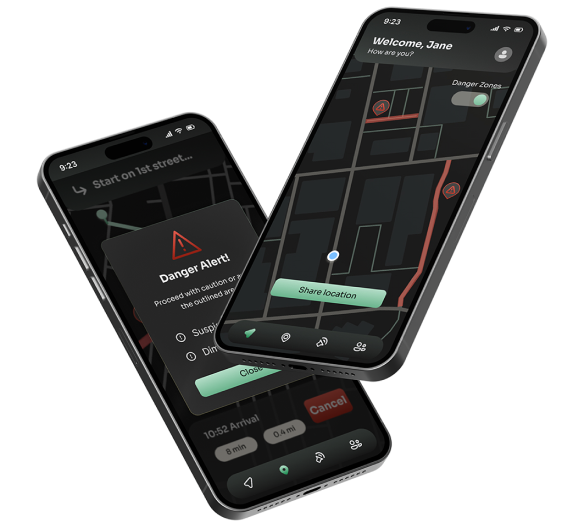
Statistically, women feel much more unsafe when in public and are the main users of personal safety apps. Women also prioritize having handy tools to keep them safe.
Safely is a mobile app designed with the intention of keeping women safe by supplying them with location-based and hands-free tools.
When going out in public, especially at night, women tend to feel less safe due to fears of dangerous encounters, crime, being alone, etc. People may get involved in uncomfortable or even dangerous situations where they need a tool to help them leave or find safety.
Personal safety apps are a common tool used to solve these issues, however, many apps are flawed. Tools that don’t fit the needs of its users, tools that require too many steps which can raise confusion during high-stress situations, and unnecessarily loud visuals that may attract unwanted attention are a few issues.
To solve these problems with pre-existing apps and to create a new product optimize to the needs of women, I followed these goals.
💡 How can we provide women with resources that help them prevent dangerous interactions and overall improve general feelings of safety when going out?
To begin the design process I started with doing research. I conducted two methods of research: competitive analysis (with SWOT analysis) and surveys.
This research was used to inform my visual designs and the functions of the app. What tools would women actually use and how can we make them feel safe?
At this point I also defined what discrete UI meant to me. Discrete interface meant built-in dark mode with color accents that were not excessively bold or heavily contrasted the rest of the interface. I found this important because of hypothetical situations where this app may be used in a dark setting. Bright whites are blinding in the dark and can easily grab the attention of others when the user may prefer to discretely access their phone.
I looked at three popular competing safety apps: Im Safe, Life 360, and Noonlight to analyze their strengths, weaknesses, and how I could leverage this information to optimize my product.
From conducting a competitive analysis I identified the components that make up safety apps. I analyze how a user would navigate through each app and detected pain points and areas of confusion. I took these insights and used them to inform my future design decisions.
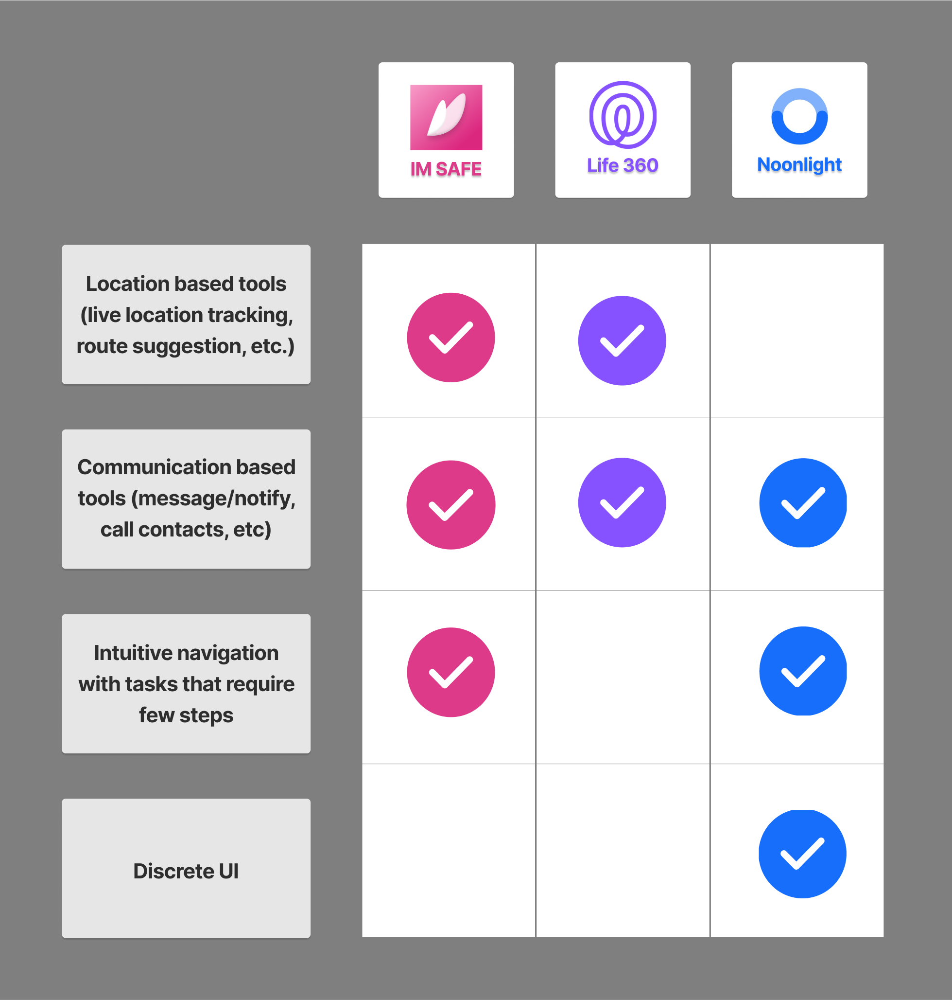
This survey gathered 18 responses and aimed to collect qualitative and quantitative data from the target audience to understand their feelings about personal safety and tools they would like to see in an app.
This research method helped me understand the current trends and commonalities within personal safety apps. It also informed the direction of my app and how I wanted to differentiate my product while still maintaining core functions.
To begin the design process I went ahead and started with low fidelity sketches. These sketches captured the main static screens of the four different tools, but also were created to be a wireflow.
The purpose of these sketches were to:
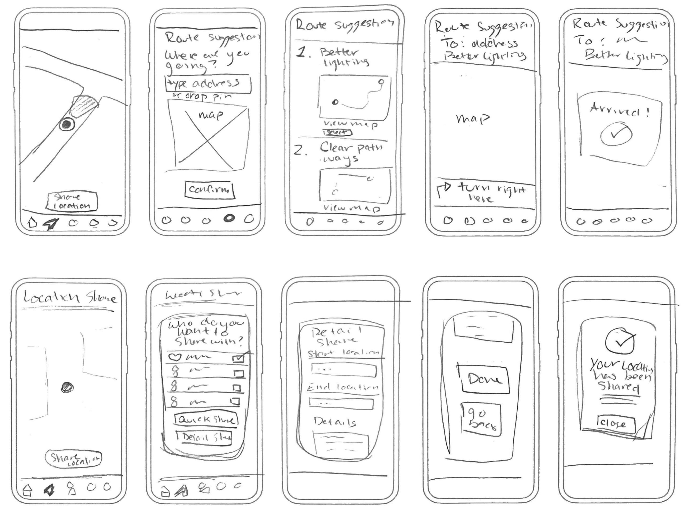
After developing the low-fidelity designs, I took my paper sketches and started digitalizing them in Figma. This prototype used my preliminary sketches to create a fully functional prototype with multiple safety tools and a simple UI design. I experimented with white space and sizing to reduce cognitive load.
Creating a wireflow strengthened my understanding of how different elements interact with one another in addition to how a user would navigate through the app’s tools.
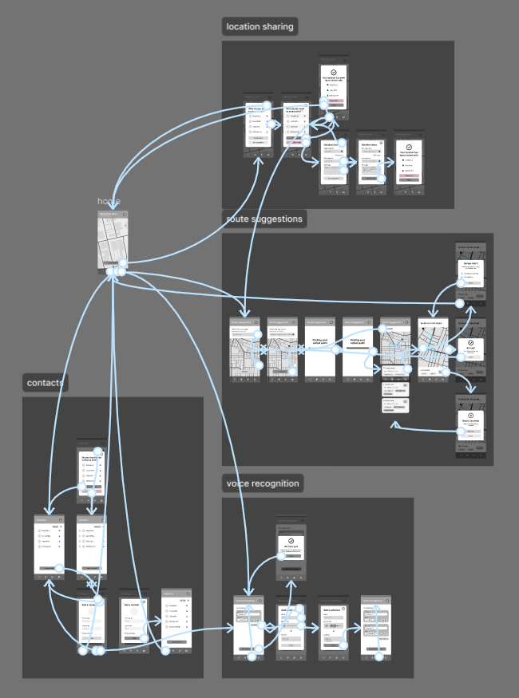
To ensure consistency between elements within my app, I created a design system to outline the design’s typography and colors.
I opted for a dark mode UI to create a more discrete interface. This would be ideal in dark or low light settings so that the glow of a bright, white screen wouldn’t attract unwanted attention.
I used green and yellow in subtle gradients and lower saturation shades to employ a smoothing feeling. These colors and application methods are more calming to reduce stress during potentially high-risk situations.
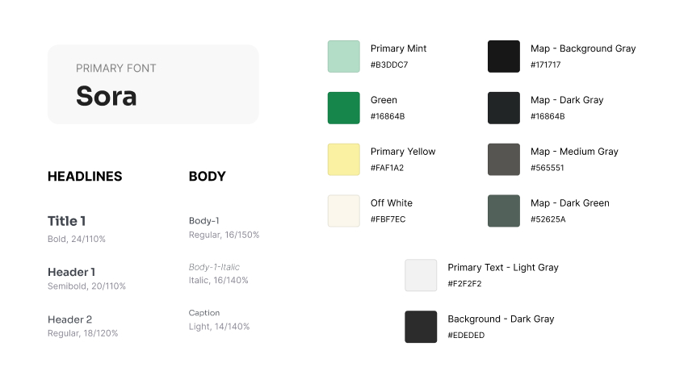
For high-fidelity designs I integrated the design system and focused on refining the visual design and functions of the tools. I carefully considered the visual presentation to optimize readability and cohesion.
Main features:
These high-fidelity designs functioned as a fully prototyped app that could be used for usability tests where I tasked users with completing the four main tasks within the app.
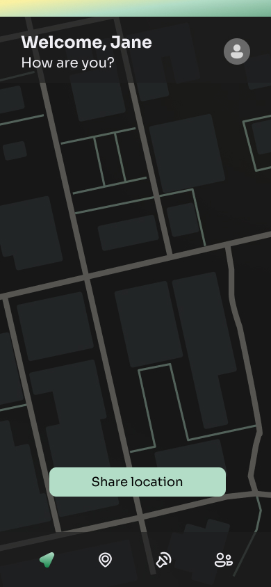
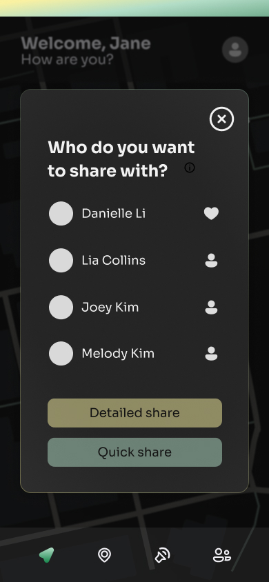
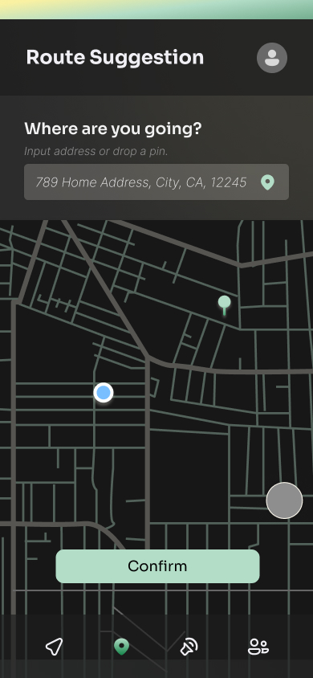
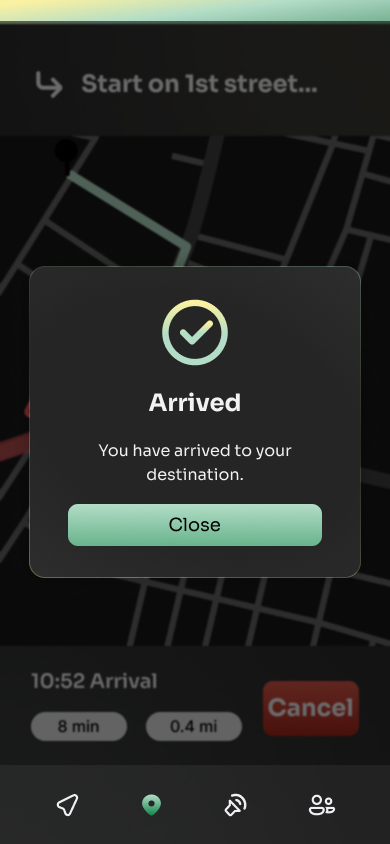
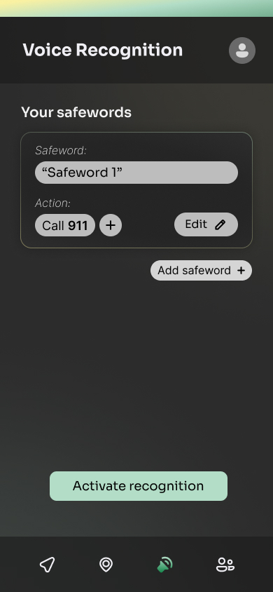
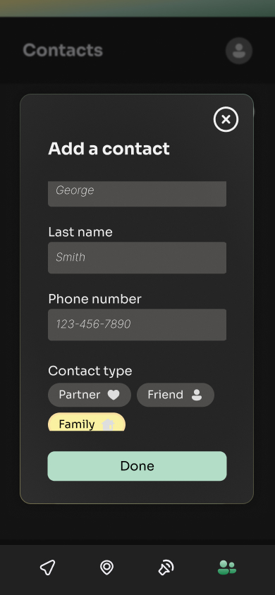
I conducted 5 user tests with users between the ages of 20 - 22 to determine how intuitive the design was and to identify areas of improvement. These users were all UC Davis students, three of which being female, two being male. I asked them to complete these four tasks as they are the main functions of the app.
This usability test was very helpful and brought up issues I had not originally seen in my design. It gave me the opportunity to bring in new ideas and communicate more with my target audience. The main takeaways from the usability test were:
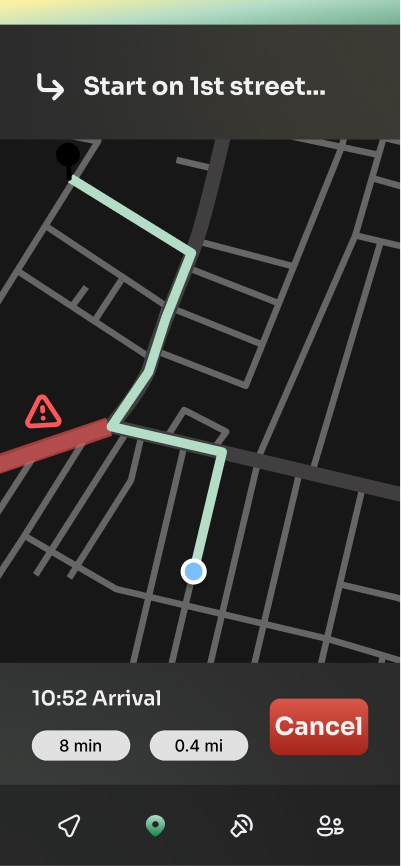
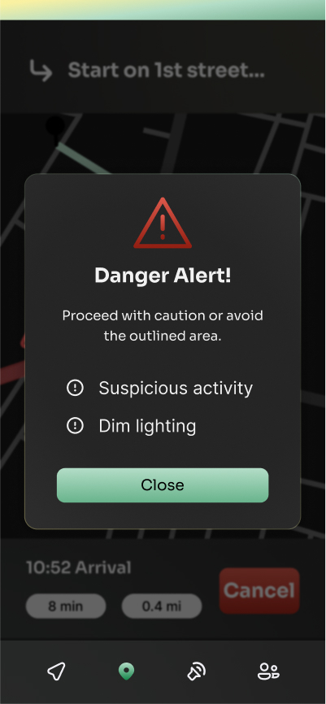
Danger alert tool found in the route suggestion feature.
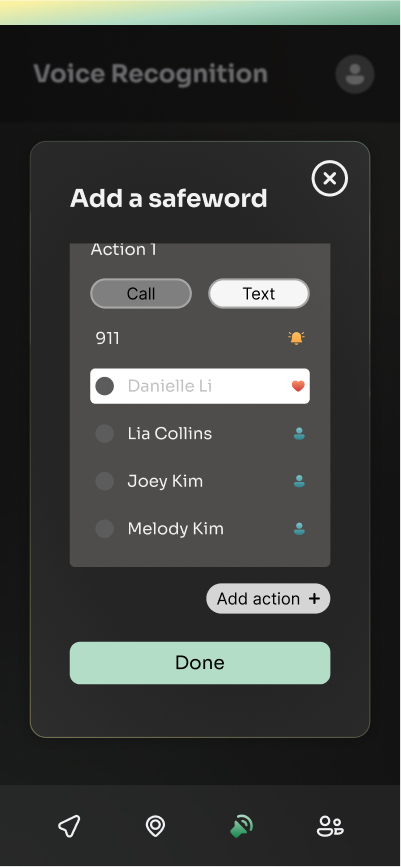
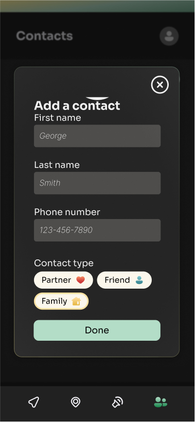
Small interfaces for adding a safeword and adding a contact.
After a 5-week research and design process, the Safely prototype was complete. The final design features four core tools: live-location sharing, route suggestions, voice recognition, and a contacts list. The visual design is a modern and sleek look. It uses a dark visual palette to reduce brightness during dark settings and uses calming green and yellow tones for accents.
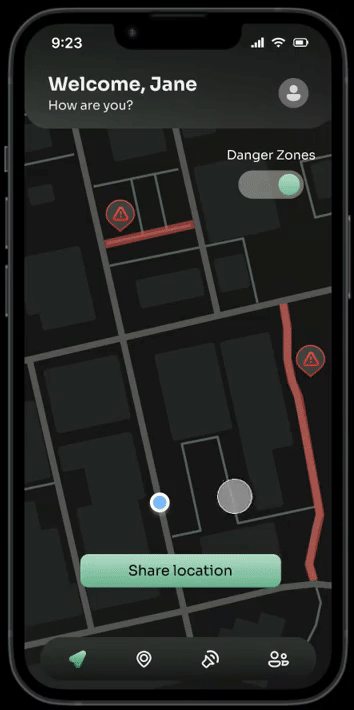
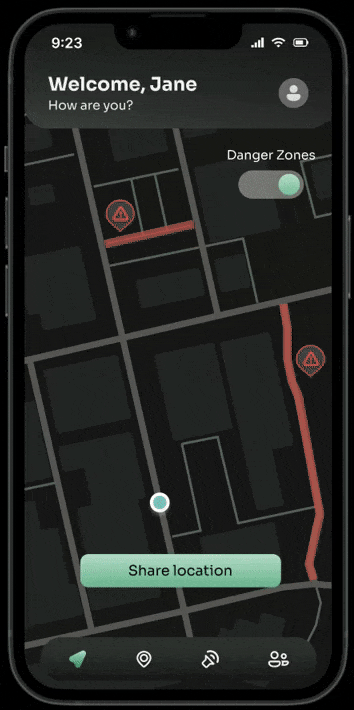
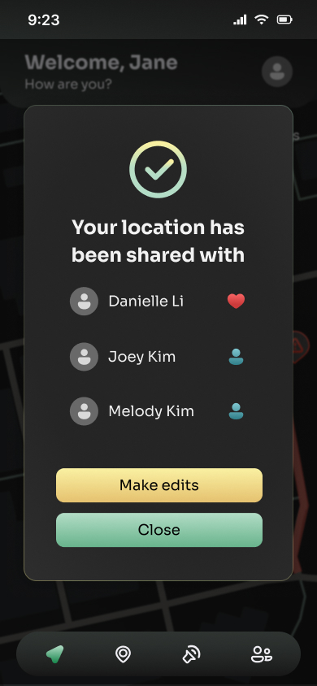
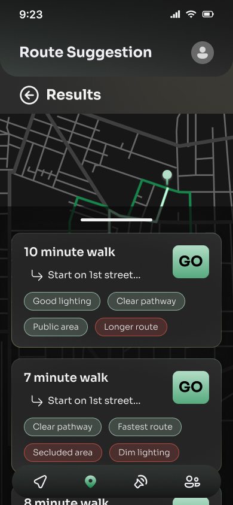
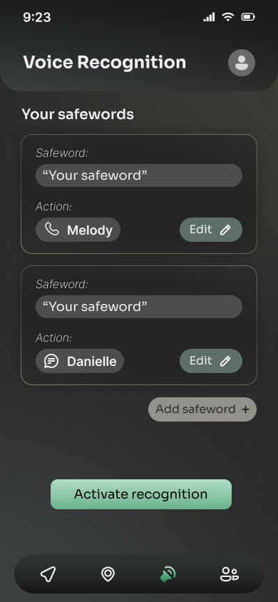
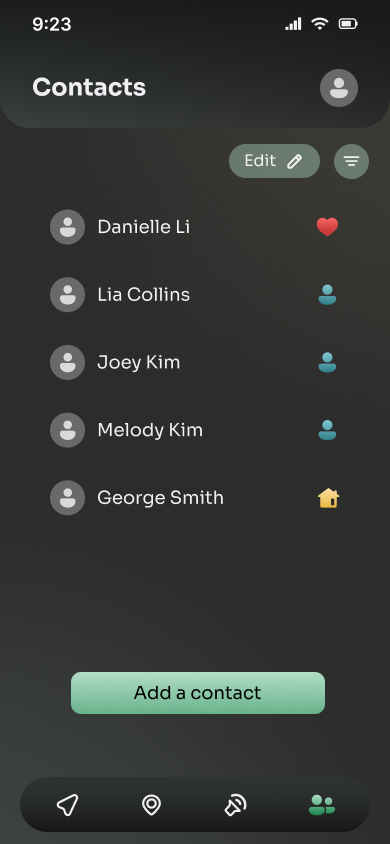
This was my first time fully prototyping a project, so because of that I ran into some difficulties. Navigating how to use components was a bit tricky but overall incredibly useful for creating flows. Getting the animations and interactive buttons just right was also a bit hard. That is something I need to work more on to further improve my skills.
This experience taught me the importance of interactive prototypes and how powerful they are as a tool. Prototypes truly allow people to have the full experience of a product that’s more in depth than a couple of static screens.
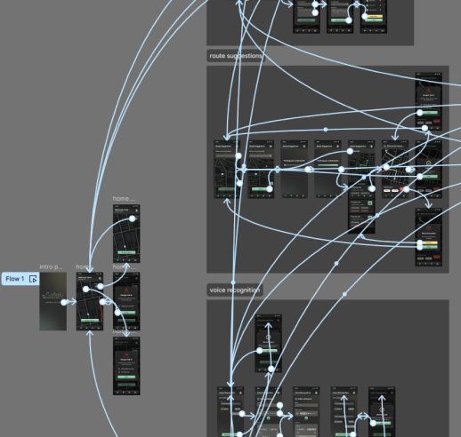
Designing a mobile app brought new challenges and helped me develop my skills as a UX researcher and designer.
For this project I conducted 5 usability tests which provided beneficial insight on how I could further improve my product. It gave me the opportunity to talk to my target audience and get more in-depth, detailed responses on how they felt about my designs. With that feedback I made the appropriate changes to fit the needs of my users.
The Safely project required substantial research to create a successful design. I learned how to compare my work to market competitors and how to conduct and write unbiased surveys. Gathering this data informed my design process and supplied me with information about my target audience.
The Safely project was created to be a fully functioning prototype in Figma. I quickly picked up the importance of components and a clearly defined design system. Using these tools allowed for greater efficiency and consistency. Utilizing components and a design system is a crucial tool that will help me in the future.